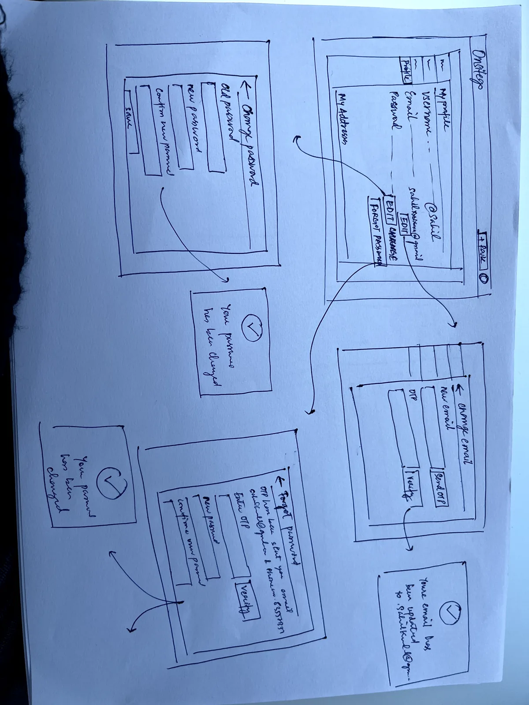
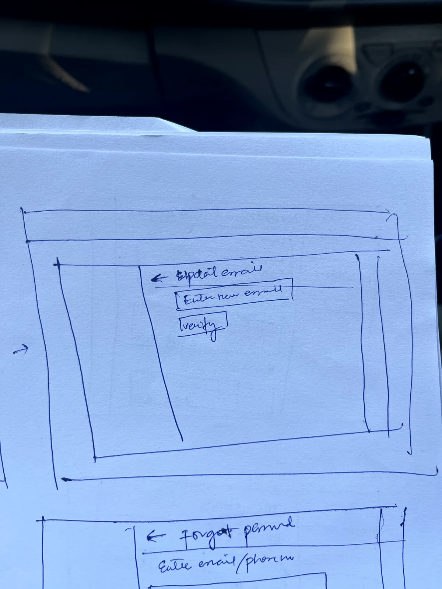
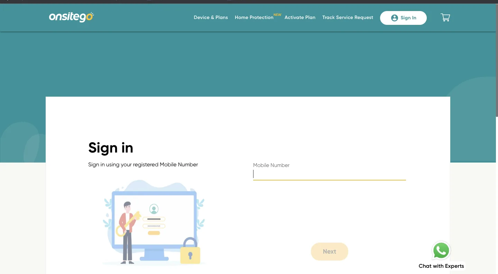
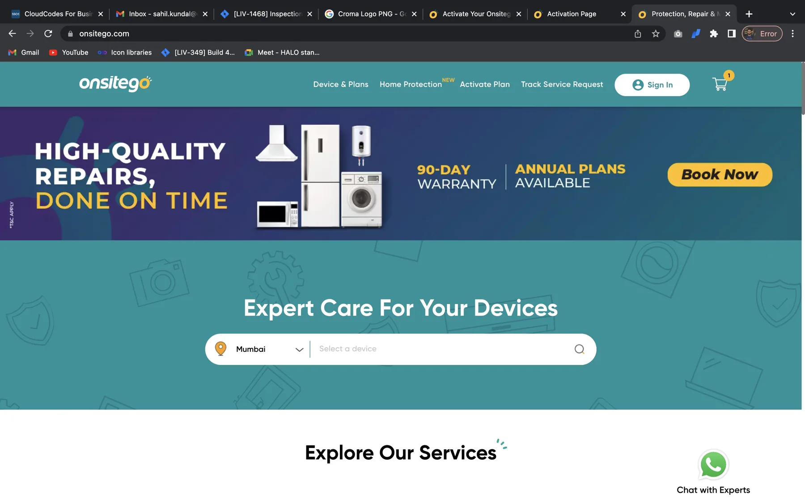

Partner Service Portal
A role-based portal for external service partners to accept work, manage service obligations and stay compatible with the internal operations model without inheriting its complexity.

Because of company policy and NDA constraints, some end-to-end screens and analytics cannot be shown. The case study focuses on the problem, research, design decisions, and selected interface glimpses.
Context: extend the service operation beyond the company boundary
The Partner portal archive contains early paper sketches, partner/brand references, service-category imagery and Onsitego sign-in/context assets. I read this as a workspace for external service partners who need controlled access to jobs, devices and commercial/service information without exposing the entire internal operations system.

The product tension: give partners enough control without giving them internal-system complexity
Know what to do next
See assigned jobs, required evidence, due dates and service expectations.
Protect consistency
Ensure external teams follow the same service states and proof standards as internal teams.
Limit complexity
Expose only the data and actions a partner is authorized to see.
Decision 1 — make the dashboard a work queue, not a reporting homepage
For external partners, “dashboard” should mean today’s obligations: jobs awaiting acceptance, appointments due, evidence rejected, invoices/payouts needing action and jobs blocked by customer or part availability. Reporting remains secondary.
Decision 2 — progressive disclosure by partner role

A service-center owner, coordinator and field technician do not need the same portal. Role-based navigation reduces training burden and protects sensitive commercial information. The owner sees performance and payouts; the coordinator sees job queues and staffing; the technician sees only assigned work and evidence requirements.
Decision 3 — use a shared service vocabulary across internal and external tools

The highest-risk failure is terminology drift: an internal system says “assigned,” a partner calls it “accepted,” and finance sees “open.” I would normalize the lifecycle into a shared state model and reuse the same status language, timestamps and exception reasons across the partner portal and internal operations system.
Shared components, different permissions
The portal should inherit core tables, status chips, filters and service-detail patterns from the internal system while applying a thinner role-appropriate shell. That creates consistency without cloning internal complexity.
Illustrative impact
Illustrative metrics for storytelling; replace with actual partner SLA, call-volume or turnaround data.
Reflection
A partner portal succeeds when it feels simpler than the internal product while still producing data the internal product can trust. The design goal is not feature parity; it is operational compatibility with much lower cognitive load.